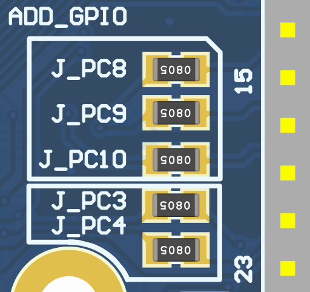
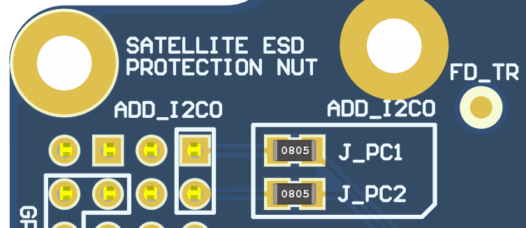
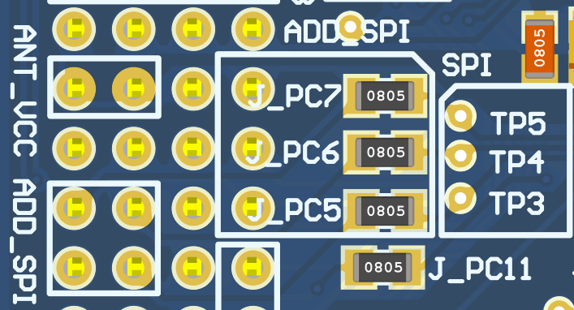

Board Assembly
The OBDH2 has some DNP components to provide flashing, debugging, testing, or extra interfaces if needed. These components may be optional for the flight model of the board. The draftsman document can be viewed for more detailed information regarding their location and board dimensions [9].
Development Model
Debug and programming connectors
The P2 and P6 connectors are used for flashing and debugging the OBDH2 board. See Programmer and Debug for more information.
Status leds
As already exposed in the document OBDH2 has status LEDs to be used during the development and test phases. See Status LEDs for more information.
Flight Model
The flight model of the OBDH 2.0 boards follows a special assembly, some components are not soldered, like the LEDs and some connectors. The PCB is also fabricated with higher quality, using the Class 3 standard and a core material less sensitive to temperature changes. The silkscreen is also not printed on the board.
Custom Configuration
On the PC104 connector of OBDH2, there are some jumper resistors to enable extra I2C, SPI, and GPIO interfaces if desired. Note that the I2C0, I2C1, and SPI channels should not be used with shared devices. These components’ corresponding tables and locations on the PCB are shown on Table 17 and Figures Fig. 31, Fig. 32 and Fig. 33.
Label |
Interface |
|---|---|
J_PC1 |
I2C0_SDA |
J_PC2 |
I2C0_SCL |
J_PC3 |
I2C1_SDA |
J_PC4 |
I2C1_SCL |
J_PC5 |
SPI_MOSI |
J_PC6 |
SPI_MISO |
J_PC7 |
SPI_CLK |
J_PC8 |
GPI0 |
J_PC9 |
GPIO1 |
J_PC10 |
GPIO2 |
J_PC11 |
GPIO3 |
{kind=link}

Fig. 31 Additional GPIOs and I2C channel 1.
{kind=link}

Fig. 32 Additional I2C channel 0.
{kind=link}

Fig. 33 Additional GPIO and SPI channel.